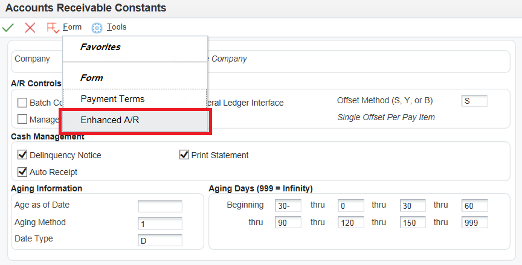
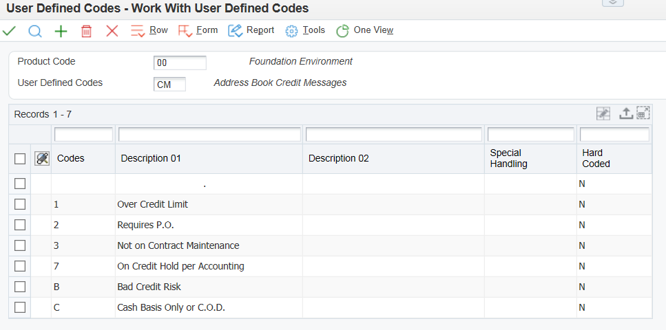
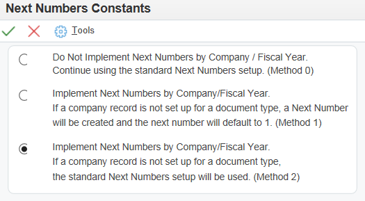
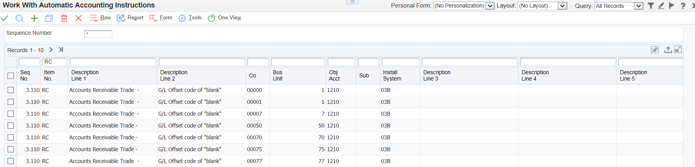

An accounts receivable department plays an important role in managing the cash flow of a business:
Processing Invoices - The accounts receivable department is responsible for processing invoices for goods and services sold to customers. Often these invoices are generated from other departments such as Sales.
Processing PaymentsReceived - The accounts receivable department primarily ensures that payments received from customers - which are commonly known as receipts - are applied to invoices, and that cash is registered into the system as soon as possible. Several factors need to be considered in these goals, for example the due date of the invoices and whether a discount can be applied.
Statistical Reporting - The accounts receivable department might want to track payment information about their customers to generate statistical information about payment habits. By compiling this information, businesses can be in a position to provide more proactive customer support and more effectively manage cash flow.
The JD Edwards EnterpriseOne Accounts Receivable system from Oracle helps you manage the cash flow with the flexibility that you need for effective cash management. It provides real-time information so that you can make immediate decisions about extending credit, forwarding to collections, and applying cash.
With the JD Edwards EnterpriseOne Accounts Receivable system, you can streamline the day-to-day functions of the entire accounts receivable department. You can simplify and accelerate the process of applying receipts and you will have up-to-date information that improves communication between the billing and the credit and collections departments.
Scope
This document is intended for EnterpriseOne users who are setting up the Accounts Receivable module for use within their organization.
Details
Accounts Receivable Integrations
The JD Edwards EnterpriseOne Accounts Receivable system integrates with these EnterpriseOne systems:
Contract and Service Billing
General Accounting system
Real Estate Management system
Sales Order Management system
Service Management system
The EnterpriseOne Accounts Receivable system works with other EnterpriseOne systems to ensure that all information is fully integrated into the general ledger and customer ledger.
Accounts Receivable Implementations
This section provides an overview of the steps that are required to implement the JD Edwards EnterpriseOne Accounts Receivable system.
In the planning phase of the implementation, take advantage of all JD Edwards EnterpriseOne sources of information, including the installation guides and troubleshooting information.
When determining which electronic software updates (ESUs) to install for JD Edwards EnterpriseOne Accounts Receivable, use the JD Edwards EnterpriseOne and World Change Assistant. Change Assistant is a Sun Microsystems, Inc. Java-based tool, which reduces the time required to search and download ESUs by 75 percent or more. It enables you to install multiple ESUs at one time. Refer to <Document 859978.1> Installing and Running Change Assistant.
Global Implementation Steps
There are a number of set up tasks which are shared across multiple EnterpriseOne Financial modules and further information is contained in the Implementation guides listed below:
Set up companies, fiscal date patterns, and business units. See JD Edwards EnterpriseOne Application Fundamentals Implementation Guide.
Set up accounts, and the chart of accounts. See Overview of the Chart of Accounts (P0901) and JD Edwards EnterpriseOne Application Fundamentals Implementation Guide.
Set up multicurrency processing, including currency codes and exchange rates. See JD Edwards EnterpriseOne Multicurrency Processing Implementation Guide.
Before you use the JD Edwards EnterpriseOne Accounts Receivable system, you need to define information that the system uses during processing. For example, you must select whether to use line of business processing and date-effective category codes, whether you require management approval for posting transaction batches, how you want to define reason codes for write-offs, deductions, and chargebacks, and how you want to set up payment terms. The system setup for Accounts Receivable enables you to configure the system for your business needs and to set up default values that can save you time when processing transactions.
Within the Accounts Receivable module there are a number of initial system set up tasks required:
Feature
Set Up Task
Accounts Receivable Constants
Establish system basics, such as:
Whether the system verifies that the amount and number of documents in a batch of transactions balance to the totals that you enter separately.
Whether you require management approval of batches of transactions before posting.
Whether you want the system to create automatic offsets in batch or in detail.
The aging method, number of days, and time intervals for aging reports and online inquiries.
Whether you want the system to process delinquency notices and statements for customers.
Enhanced Accounts Receivable Constants
Specify whether to use line of business processing or date-effective category codes:
Line of business processing: If you do business with one customer that is differentiated by multiple lines of business, you can distinguish these customers by product, division, or geography.
Date-effective category codes: If you use category codes, this option enables you to assign effective dates to them.
User Defined Codes (UDC)
Define codes, such as document types and reason codes, that are appropriate for the business needs.
Next Numbers (NN)
Establish an automatic numbering system for documents.
Automatic Accounting Instructions (AAIs)
Set up AAIs that the system uses to identify the appropriate account numbers when it automatically creates journal entries for transactions. Define which accounts that the system updates for accounting purposes, such as offset, suspense, and default bank accounts.
Before using the Accounts Receivable module it is also necessary to set up:
Customer master information and customer bank information.
Additionally you may also need to set up and/or review:
Constants provide a basic framework for how the EnterpriseOne Accounts Receivable system works, based on the business needs. When you set up Accounts Receivable constants, you set up controls for the entire system, as well as establish information by company (such as aging information). For example, you can specify whether management approval is required for posting invoices and receipts, and how the system generates automatic entries when accounts receivable batches are posted.
When setting up Accounts Receivable constants, you can specify whether to process accounts receivable by line of business and whether to use date-effective category codes using the Enhanced Accounts Receivable Constants. The system stores Accounts Receivable constants in the F0009 and F0010 tables.
NOTE:Do not change system constants after you set up the system. If you do make changes, you must be thoroughly familiar with the information because constants are central to the system processes. You should also ensure that only authorized personnel can access and maintain the constants.
Setting System Constants
A/R Controls Section: These constants control the Accounts Receivable system for all companies. They are set up for company 00000 only, as the default company:
From System Setup (P0000), select ‘Accounts Receivable Constants’.
Click ‘Find’ and select ‘Company 00000’.
Set the following fields to the desired value:
Batch Control Required - If you want to specify the total number of documents to enter in a batch and the corresponding amount, you can select this option. By selecting this option, the system displays the Batch Control form (P0011) prior to entering a batch transaction, on which you enter information about the batch. This form enables you to compare what you actually entered against what you specified that you would enter, which helps you minimize entry errors.
Manager Approval of Input - If you select this option, the system assigns a pending status to all invoice and receipt batches, which require batch approval before you can post them.
General Ledger Interface - Select this option if you are using the JD Edwards EnterpriseOne General Accounting system. Failure to select this option results in one-sided entries that negate any integrity reporting.
Offset Method - When you post transactions to the general ledger, you can select whether to create one offsetting entry per batch 'B', one offsetting entry per transaction 'Y', or one offsetting entry per pay item 'S'.
NOTE: If on the General Accounting Constants (P0000) the Multicurrency Conversion field is set to either Y or Z and if the Detailed Intercompany Settlements field contains a value of either '2' or '3', then you must specify an Offset Method of either 'S' or 'Y' in the Accounts Receivable [and Accounts Payable] Constants. If not, the system returns an error when you post the batch. See Overview of Intercompany Settlement Methods (P0000) and Overview of General Accounting Constants (P0000) for more information.
Set the default Company Constant fields in the 'Cash Management' and 'Aging Information' sections to the desired value. See section below.
Click ‘OK’.
Setting Company Constants
When you set up Accounts Receivable constants, you can designate cash management options and default aging information by company. The constants enable you to specify whether to print statements and delinquency notices, process automatic receipts, and use different aging categories and dates for collection purposes.
These are set up on Company 00000 as default values, which are then copied to all other companies that have been set up in the JD Edwards EnterpriseOne General Accounting system. At this point, the companies contain the default values from Company 00000. Therefore, you only need to revise the information for the companies that you want to be different from company 00000.
Although you establish default settings for the cash management options on a company basis, you can override those settings at the customer level when you set up customer information. Many Accounts Receivable reports and batch processes enable you to specify aging information in the processing options that override the default values in the constants.
From System Setup (P0000), select ‘Accounts Receivable Constants’.
Click ‘Find’ and select your specific company, ‘Company 00001’ for example.
The AR Controls field values are defaulted from those set up for Company 00000 and will be grayed out for all other companies.
The following fields are defaulted from those set for Company 00000. If you wish to change these to a company specific value, make changes and click 'OK':
Delinquency Notice - Select this option to print delinquency notices for the company based on the notification instructions that are set up for the policy that you assign to the customer.
NOTE: This option exists in both the Customer Master Information program (P03013) and the Accounts Receivable Constants program (P0000). In the Accounts Receivable Constants program, the option controls whether notices are printed for invoices that are entered for a specific company. In the Customer Master Information program, the option controls whether notices are printed for a customer.
Auto Receipt - Select this option to process receipts in the EnterpriseOne Accounts Receivable system using the automatic receipt processing programs. The option must be activated for both the customer and the company in the Accounts Receivable constants for the system to process automatic receipts.
Print Statement - Select this option to print statements for the customer.
NOTE: This option exists in both the Customer Master Information program (P03013) and the Accounts Receivable Constants program (P0000). In the Accounts Receivable Constants program, the option controls whether statements are printed for invoices that are entered for a specific company. In the Customer Master Information program, the option controls whether statements are printed for invoices entered for the customer.
Age as of Date (DAG) - Enter the date that the system uses to determine the aging category to which invoices are assigned. The system compares the aging date to the invoice date, statement date, due date, or G/L date, which is defined by the value in the Date Type field (AGE) (also referred to as Aging - Date Based On), and then uses the value in the Aging Method field (AGEM) to determine which aging category to update. If you use method '1', Aging Days, the aging categories are defined in the Aging Days fields (CRDY, AGR1, AGR2, AGR3, AGR4, AGR5, AGR6, and AGR7) in the Accounts Receivable constants. If you leave this field blank, the system uses the current date.
NOTE: The JD Edwards EnterpriseOne Sales Order Management system also uses this date for credit checks. Leave this field blank to ensure that the credit checks are always current.
Aging Method (AGEM) - Enter the code that designates which aging categories that the system uses to assign invoices. The system uses the date that is specified in the Age as of Date field (DAG) and the value that is specified in the Date Type field (AGE) to calculate the aging for each invoice, and then assigns them to the aging category specified by this code. Values are:
1: Aging days. The system assigns invoices to the aging categories specified in the Aging Days fields. The aging categories are user–defined.
2: Fiscal periods. The system uses the fiscal periods defined by the date pattern assigned to the company record as the aging categories.
3: Calendar. The system uses each calendar month as an aging category.
Date Type (AGE) - Enter the code that specifies which date on the invoice record to use to calculate aging. The system compares the date on the invoice record to the date in the Age as of Date field (DAG) to determine the aging, and then updates the aging category based on the method specified in the Aging Method field (AGEM). Values are:
I: Invoice date
D: Due date
G: G/L date
S: Statement date
Aging Days - Beginning and thru (CRDY, AGR1 - AGR7) - Enter a number to define the number of days in the aging categories. The system uses the value that you enter in the Beginning field (CRDY) in conjunction with the value of AGR1. The system uses values in the thru fields in conjunction with CRDY and AGR2 to define the current and first aging categories.
Setting Up Enhanced Accounts Receivable Constants (P0000)
You use the Enhanced Accounts Receivable Constants to specify whether to use line of business processing and date-effective category codes.
Line of Business Processing
Line of Business processing was designed to allow users to distinguish various Accounts Receivable needs of a customer for different departments, locations, products and divisions. When implemented, the user is able to process Accounts Receivable information such as credit limits, payment terms and default tax information for each customer by company. When using Line of Business processing, multiple Customer Master By Line Of Business (F03012) records are needed for a customer in order to assign different terms for different products and business obligations.
Example
Corporation XYZ (Customer Number 123) has branches in Delaware (Company 00001), California (Company 00002) and Florida (Company 00003) and each branch has unique Accounts Receivable processing needs. Corporation XYZ has established the need to utilize the Line of Business processing feature, therefore three separate Customer Master Records must be established in the F03012 for each of the branches. These records will be keyed to the same Address Book number (123), but with different company numbers. Corporation XYZ (Customer Number 123) is established once within the Address Book Master (F0101). With Line of Business enabled, Delaware is defined as Company 00001 in the F03012, California as Company 00002 in the F03012 and Florida as Company 00003. The branches’ unique identification is defined in the Customer Master (F03012).
Activating Line Of Business
The Line of Business feature is an Accounts Receivable Constant. The first step to enable this feature is to activate the Constant.

From System Set Up (P0000), select ‘Accounts Receivable Constants’.
Click ‘Find’ to display available companies and select Company 00000.
Take the ‘Enhanced A/R’ form exit. The following options appear:
World Software A/R - This is the only option for Enterprise World users. The option is not available in 8.9 and later releases.
A/R - One customer record is used for all EnterpriseOne companies. Prior to 8.9, the option is "OneWorld A/R."
A/R – Line of Business - This option allows the use of multiple companies for one EnterpriseOne customer. Prior to 8.9, the option is "OneWorld A/R - Line of Business,".
Select 'A/R- Line of Business' and click ‘OK'.
NOTE:The Accounts Receivable Constants stored in General Constants (F0009) are cached information stored in both Database Caching and Service Cache. If you change settings for any of the constants, you must perform following steps in order for the changes to take effect:
On fat client, signing off and signing back in will help to reset the cache.
On web client, it will be required to explicitly reset the cache apart from signing off and signing back in.
In some instances, clearing the cache as mentioned above has not helped since F0009 is a bootstrap table and is cached with each call object kernel on the Enterprise Server. In such cases, it is advisable that the JDE services must be bounced for the Enterprise Server.
Further steps related to Line of Business Processing are documented in the Customer Master section of the Accounts Receivable Implementation guide for your release, available here.
NOTE: It is not recommended to turn the Line of Business flag on or off once you have started to use the system and Oracle Support is unable to support any issues arising from the changing of this value with existing live data. The Line of Business information is stored in the Customer Master Table (F03012), which is shared across multiple applications such as CSMS, Contract Billing, Service Billing and Sales Order Processing. Each of these applications refers to the Accounts Receivable Constants to determine which F03012 record (company 00000 or company specific) to use in creation of the F03B11, F03B112, F03B13, and F03B14 records. When choosing to utilize either OneWorld A/R or OneWorld A/R - Line of Business, it is recommended to make a decision regarding which feature is best suited for business needs and remain with that solution. This is because Line of Business processing is data sensitive and effects all records added by company with different default criteria, credit collection techniques, and reporting needs. Due to the complexities of this feature, some ramifications of its use may be unforeseeable.
Date Effective Category Codes
If you are using the Advanced Pricing system, you might want to select the Date Effective Category Code option on the Enhanced A/R Constants form. You use customer category codes in the Advanced Pricing system to specify the customer group and pricing to use for the customer base. By selecting this option, you can set up multiple sets of category codes for a single customer by effective date. This option enables the Advanced Pricing system to adjust the pricing based on the effective date for each customer group.
When you select the Date Effective Category Code option, the system displays Form menu options from the Customer Master (P03013) application that enable you to set up category codes with effective dates. If you do not select this option, the system hides these menus.
When you use date-effective category codes, you cannot enter category code values in the customer master record (F03012). Instead, you enter them in a date-effective category code record (F03012A) and run Update Effective Date Category Codes (R03012A) to update the customer record. See Activating Date Effective Category Codes. The Date Effective Category Code is an Accounts Receivable Constant. The first step to enable this feature is to activate the Constant.
From System Setup (P0000), select ‘Accounts Receivable Constants’.
Click ‘Find’ to display available companies and select Company 00000.
Take the ‘Enhanced A/R’ form exit.
Select ‘Date Effective Category Codes’ and click ‘OK’.
NOTE: The Accounts Receivable Constants, stored in General Constants (F0009) is a cached table. See note above for clearing the cache for changes to take effect.
Many fields throughout JD Edwards EnterpriseOne systems accept only UDC values. When you enter an invoice, for example, a UDC specifies the document type of the invoice. The system does not accept values that are not defined in a UDC table. You can use the UDC tables to add and modify values to your business requirements. However some UDCs are hard-coded and some also contain a special handling code to direct the system to perform a specific function. These are generally marked as such in the UDC tables and should not be changed.
It is also possible in some UDC tables to set up a 'blank' value to be used as the default. In this way, users are not required to enter a value in the field linked to the UDC table, unless they wish to set up a value other than the default.
The following list contains the UDCs used in Accounts Receivables. These can be set up and reviewed using User Defined Codes (P0004A):

Address Book Credit Message Codes (00/CM)
You can assign codes to notify you of a customer’s credit status (00/CM). These credit messages are used throughout all systems. Examples are:
1: Over credit limit.
2: Requires P.O.
3: Not on contract maintenance.
7: On credit hold per accounting.
B: Bad credit risk.
C: Cash basis only or C.O.D. (collect on delivery).
Discount Reason Codes (00/DE)
You can assign a discount reason code during receipt or draft entry for tracking purposes or when you want to use multiple discount accounts. If you set up Automatic Accounting Instruction (AAI) item RKDxxx (where xxx is the reason code), the system uses the account that is associated with the AAI item. To track discounts by tax rate area, use discount reason codes that are the same as the tax rate area code. Examples of discount reason codes are:
ADJ: Adjusted discount
ONT: Ontario tax rate area
QUE: Quebec tax rate area
UE: Unearned discounts that were granted
NOTE: If you do not use discount reason codes, verify that blank is set up as a value for this UDC. Otherwise, the system returns an error when you enter a receipt or draft and grant a discount.
Document Type Codes (00/DT)
When you enter a transaction, the system assigns a document type, such as invoice or credit memo, based on the specified UDC. The document type, along with the document number and document company, constitute the link between transactions in the JD Edwards EnterpriseOne Accounts Receivable and the General Accounting systems. There are two types of documents that you set up in UDC table 00/DT for Accounts Receivable:
Invoice document type codes.
Receipt document type codes.
Invoice Document Type Codes (00/DT)
The invoice document type identifies the type of invoice. You must set up a code for each type of document that you use when you enter invoices. If the document type is hard-coded, you cannot assign other document types for that type of invoice. All invoice document types that are set up in UDC 00/DT should also be set up in UDC 00/DI. You set up default invoice and credit memo document types in the Invoice Entry MBF Processing Options program (P03B0011).
This table lists invoice document types and a description of each:
Document Type
Description
Use
RI
Invoice
The system assigns this document type when you enter an invoice.
RR
Recurring Invoice
The system assigns this hard-coded document type when you enter an invoice and specify the number of payments and frequency.
RM
Credit Memo
The system assigns this document type to the invoice when you issue a credit memo.
RB
Chargeback Invoice
The system creates an invoice with this hard-coded document type when you designate an invoice that has not been fully paid as a chargeback in the receipt system.
RF
Delinquency Fee
The system creates an invoice with this hard-coded document type when you generate delinquency fees. Delinquency fees are also known as finance charges.
RU
Unapplied Receipt
The system creates an invoice with this hard-coded document type when you enter receipts that are not applied against any invoices.
R1
A/R Draft
The system creates an invoice with this hard-coded document type when you enter drafts.
Receipt Document Type Codes (00/DT)
Receipt document types are also known as matching document types. They cannot exist by themselves. You must attach (or match) each to a corresponding original document, except for logged receipts. For example, a receipt is a matching document that must always have a corresponding invoice as the original document. All matching document types are hard-coded, and consequently additional 00/DT receipt document types cannot be added to the system.
Unlike invoice document type codes, receipt document type codes are set up only in UDC table 00/DT.
The system provides these codes to use for matching documents when you enter and post receipts:
Document Type
Description
Use
RC
Receipt
The system assigns this document type when a receipt is entered.
RO
Void Receipt
The system assigns this document type when a receipt is voided.
RS
Spread Receipt
The system assigns this document type when a credit memo is applied to an invoice on a zero amount receipt. This document type is not assigned when applying an unapplied receipt to an invoice.
RV
Insufficient Funds Receipt
The system assigns this document type when a customer has insufficient funds in the bank to pay the payment.
RU
Unapplied Receipt
The system assigns this document type to a receipt that is not applied to a specific invoice.
RL
Logged Receipt
The system assigns this document type to a receipt that is not associated with a customer or payor.
RR
Rounding Record
The system assigns this document type when a foreign currency receipt is either fully applied on the foreign side, but not fully applied on the domestic side, or fully unapplied on the foreign side but not fully unapplied on the domestic side due to rounding issues. This rounding record is at the receipt level and is not associated with any particular invoice pay item.
Invoice Document Type Codes (00/DI)
All invoice document types that are set up in Document Type Codes (00/DT) must also be set up in Invoice Document Type Codes (00/DI). The invoice document type identifies the type of invoice. You must set up a code for each type of document that you use when you enter invoices in UDC table 00/DI. If the document type is hard-coded, you cannot assign other document types for that type of invoice. See table for 00/DT for further examples of invoice document types.
Payment Status Codes (00/PS)
Payment status codes (00/PS) indicate whether an invoice is approved, pending, paid, and so on. You assign a payment status code if you need to change the status that the system has assigned. These payment status codes are hard-coded:
A: Approved for payment.
D: Draft accepted.
E: Draft - expired not collected.
G: Draft deposited not due.
H: Held pending approval.
P: Paid in full.
R: Retainage.
Payment Instrument Codes (00/PY)
Payment instrument codes (00/PY) specify various methods of payment. You can assign a payment instrument code to invoices to differentiate them for different types of processing. Examples of payment instruments used in the JD Edwards EnterpriseOne Accounts Receivable system include:
A: Auto debits
D: Draft by invoice
F: Draft by statement
T: Electronic funds transfer
Credit Manager Codes (01/CR) and Collection Manager Codes (01/CM)
You can assign codes to specify who is responsible for updating and approving credit information, such as credit limits, and who is responsible for approving collections information, such as delinquency fees and notices. For the manager who is represented by this code to receive workflow messages, you must also specify the manager’s address book number in the Description 2 field.
NOTE:The Credit Manager UDC (01/CR) requires that you also set up blank as a value. You must enter some character in the Description 1 field, such as a period, to set up the code as blank.
Dun & Bradstreet Rating Codes (01/DB)
You can assign codes (01/DB) to identify the Dun & Bradstreet credit rating for customers. Examples are:
BA1: High
BA2: Good
BA3: Fair
BA4: Limited
Language Preference Codes (01/LP)
You can assign codes (01/LP) to identify the language for invoices, statements, and so on. Examples are:
Blank (default): Domestic language
F: French
G: German
Experian Rating Codes (01/TR)
You can assign codes (01/TR) to specify the Experian credit ratings for customers. Examples are:
AAA: Excellent
BBB: Good
Aging Vocabulary Codes (03B/AG and H00/AG)
You can assign aging vocabulary codes (03B/AG and H00/AG) to specify the terminology on the A/R aging reports.
Examples for UDC 03B/AG include:
1: Over
2: Previous
3: Future
4: Current
Examples for UDC H00/AG include:
D: Due date
G: G/L date
I: Invoice date
S: Statement date
Chargeback Reason Codes (03B/CB)
You must assign a chargeback reason code (03B/CB) to explain the reason for entering chargeback for the invoice. Examples are:
DA: Disputed amounts
DD: Disallowed discount amount
SP: Short payment
SU: Spread unapplied amount
Collection Reason Codes (03B/CL)
You can assign collection reason codes (03B/CL) to explain why an invoice is delinquent. Examples are:
BK: Customer in bankruptcy
DP: Disputed by customer
NP: Delinquent or nonpayment
Deduction Reason Codes (03B/CR)
You must assign a deduction reason code (03B/CR) when you create a deduction to indicate the reason that you entered it. Examples are:
DA: Disputed amount
DG: Damaged goods
GR: Goods returned
PD: Pricing discrepancy
SS: Short shipment
UD: Undefined claim
Paid Late Codes (03B/PL)
Paid late codes (03B/PL) indicate whether a customer pays an invoice on time or whether it is paid late. The system assigns this code to the Paid Late field (PDLT) in the Receipts Detail table (F03B14) when you run the Statistics History Update program (R03B16A). Values are:
0: Invoice paid on time
1: Invoice paid late
Activity Priority Codes (03B/PR)
Activity priority codes (03B/PR) specify the sequence in which the system displays action items for credit and collection management purposes. The action item with the highest priority should be assigned priority '1'. These activity priority codes are hard-coded:
1: Priority 1
2: Priority 2
3: Priority 3
4: Priority 4
5: Priority 5
Write-Off Reason Codes (03B/RC)
When you write off a portion of an invoice, you must assign a reason code (03B/RC) to describe the adjustment to the invoice amount. The reason code that you assign corresponds to the AAI item RAxx (where xx is the reason code) that the system uses to locate the account that you want to debit. Examples are:
BD: Bad debit
CN: Concession
DA: Disputed amount
MW: Minor write-off amount
RV: Revisions - data entry error
TF: Disputed tax or freight
VD: Void - duplicate entry
WO: Miscellaneous write-off
Enter '1'in the Special Handling field for each reason code for which you want to accumulate write-off amounts in the Minor Write-Off (MWO) field in the AR Statistical History (F03B16) and AR Statistical Summary (F03B16S) tables. If you leave the Special Handling field blank, the system accumulates the associated amounts in the Bad Debt (BDBT) field.
The system accumulates these write-off amounts when you run the Statistics History Update program (R03B16A).
Standard Receipt and Draft Type Input Codes (03B/RE)
Type input codes (03B/RE) indicate how receipts and drafts are applied to invoices. These examples are hard coded for standard receipts entry and the draft entry programs:
10: Simple invoice match.
11: Match automatic chargeback discount.
15: Match with write-off.
16: Match with chargeback.
17: Match with deduction.
25: Standalone write-off.
26: Standalone chargeback.
27: Standalone deduction.
30: Partial NSF (used in draft processing only).
36: Partial NSF chargeback (used in draft processing only).
Speed Receipt Type Input Codes (03B/SA)
Speed receipt type input codes (03B/SA) specify the input method to use to enter receipts using the Speed Receipts Entry (P03B0001) method. These speed receipt type input codes are hard-coded:
1: Unapplied receipt
2: Balance forward receipt
3: Logged receipt
4: General ledger
Void/NSF Reason Code (03B/VR)
Void reason codes (03B/VR) indicate the reason for which a receipt is voided or designated as NSF. Examples are:
DSP: Dispute
ECK: Error check
NSF: NSF receipt
PNS: Partial NSF
RF: Refund
VOD: Void receipt
Setting Up Accounts Receivable Next Numbers (P0002)
When you create a document such as an invoice, a voucher, or a journal entry, you can assign a document number to uniquely identify the document or let the Next Numbers program (P0002) assign one. If you choose to manually assign a document number instead of using next numbers, you must enter the number during data entry. Next numbers is an automatic numbering utility. The Next Numbers program assigns numbers to documents using one or both of these:
Standard next numbers. The system finds the next available number in the Next Numbers - Automatic table (F0002) and assigns that number to the document.
Next numbers by company and fiscal year. The system finds the next available number by company and fiscal year or by company only in the Next Numbers by Company/Fiscal Year - Automatic table (F00021).
Follow these rules when you work with next numbers:
Do not use blank as a next number value.
Do not change a next number. Changing the numbers can result in duplicate numbers, as well as the inability to locate previously added numbers. If you must change a next number, change it to a greater value only.
Do not delete next number values. If you delete a next number value, you might get unexpected results.
Do not change the sequence of the next numbers in the table. Next numbers work in conjunction with the data dictionary. Each data dictionary item that uses next numbers contains a next-numbering index value that corresponds to the line number that contains the next number value for that data item. Each next number must remain on its current line because programs reference a specific line in the table. For example, in the General Accounting system, the next number for journal entries must be on the second line.
You can have the system assign check digits for any set of standard next numbers. The check digit feature prevents errors that are caused by transposition during data entry. For example, activating check digits in the address book for suppliers prevents a voucher from being assigned to the wrong supplier if digits are transposed during voucher entry. Use check digits for next numbers only when a transposition error is likely to occur during data entry.
Next Numbers By System
To access system next numbers, you can use fast path 'NN' or navigate to Next Numbers (P0002). Next select the system in which to set up next numbers, i.e. 03B for "Accounts Receivable", 04 for "Accounts Payable" or 09 for "General Ledger".
Next Number - Enter the number that the system will assign next. The system can use next numbers for voucher numbers, invoice numbers, journal entry numbers, address numbers, and so on. You must use the next number types that are already established (and located under the Use column) unless your company provides custom programming.
Chk Dgt (check digit) - Select to specify that the system add a number to the end of each next number that is assigned. For example, if you are using check digits and the next number is 2, the system will add a check digit such as 7, making the last two numbers 27. The check digits option provides a method for increasing numbers randomly to prevent the assignment of transposed numbers. In this example, the system would never assign next number 72 with check digits activated.
Next Numbers by Company and Fiscal Year
The system can assign a unique set of next numbers to invoices and other documents for a specific company and fiscal year. This is helpful if your organization needs to have a consecutive document number for each company by fiscal year. This section lists a prerequisite and discusses how to:
Select a method for next numbers by company and year.
Set up next numbers by company and year.
Add a fiscal year to an existing record.
Remove a fiscal year from an existing record.
Selecting a Method for Next Numbers by Company and Fiscal Year
Next Numbers by Company and Fiscal Year are controlled by the Next Number Constants. To access Next Number Constants, you can use fast path 'NN' or navigate to Next Numbers (P0002). Take the form exit 'NN Constants' and select the option to implement next numbers by company and fiscal year (method 1 or 2).

Method 1 -Implement next number by company/fiscal year. If a company record is not set up for a document type, a next number will be created and the next number will default to '1'.
Method 2 - Implement next number by company/fiscal year. If a company record is not set up for a document type, the standard next numbers set up will be used.
NOTE: If method 1 or 2 is already selected on the Next Numbers Constants form and next numbers by company or document already exist, you must delete the next numbers before you can change the method. Changing the method and next number set up once a system is live may cause unexpected results and is not recommended.
Set Up Next Numbers by Company and Fiscal Year
Once a method for Next Numbers by Company/Fiscal Year has been selected, you need to set up the next numbers (NN). To set up next numbers by company and fiscal year, take the form exit 'NN by Co/FY' from Work with Next Numbers (P0002). Enter document company in the header and click 'Find' to display any existing records. To add a new NN line, go to bottom of the grid and enter the following in the first blank line:
Document Type - Enter a value from user defined code (UDC) table 00/DT that identified the origin and purpose of the transaction.
Same As Doc Type (same as document type) - If you set up next numbers by company or by company and fiscal year, a document type can share the same next number sequence as another document type. For example, you create a recurring invoice (document type RR). The recurring invoice that you create should use the same next number sequence as regular invoices (document type RI). In this example, you would set up the document type RR with a same as document type of RI. Enter a value that identifies a document type in user-defined code (UDC) table 00/DT.
Fiscal Year - A number that identifies the fiscal year. Generally, you can either enter a number in this field or leave it blank to indicate the current fiscal year (as defined on the Company Setup form (P0010)). Specify the year at the end of the first period rather than the year at the end of the fiscal period. For example, a fiscal year begins October 1, 2011 and ends September 30, 2012. The end of the first period is October 31, 2011. Specify the year 11 rather than 12.
Imbed Digits- Enter the number of digits that the system imbeds in a document number to represent the fiscal year. Imbed digits apply only to next numbers by fiscal year. Values are:
1: Imbed one digit. The last digit of the fiscal year will be imbedded in the first position of the resulting document number. For example, in 20012345, the first digit represents the last '2' from 2012, and the remainder of the number (0012345) is the next number.
2: Imbed two digits. The last two digits of the fiscal year will be imbedded in the first two positions of the resulting document number. For example, in 12012345, the first two digits represent the 12 from 2012, and the remainder of the number (012345) is the next number.
Check Digit - An option that specifies whether the system adds a number to the end of each next number assigned. For example, if you are using check digits and the next number is 2, the system will add a check digit such as 7, making the last two numbers 27. The check digits option provides a method for increasing numbers randomly to prevent the assignment of transposed numbers. In this example, the system would never assign next number 72 while the check digits option is activated. Enter a check digit to use this option or leave blank if not required.
Next Number - The number that the system will assign next for the specified document type/document company/fiscal year.
Auto Reset - Enter the number that you want the system to use when resetting next numbers for a new fiscal year. The system begins next numbering for a new year with the number that you specify. Auto reset applies only to next numbers by fiscal year.
If a company record is not set up for a specific document type, the results vary, depending on the method selected on Next Numbers Constants, as follows:
If you are using method 1, the system creates a record for each company that you do not set up and starts numbering with 1 for all companies.
If you are using method 2, the system uses the starting number shown on Set Up Next Numbers by System (standard next numbers) for each company that you do not set up.
Adding a Fiscal Year to an Existing Record To add a fiscal year to a record that already exists for a company with no fiscal year defined, you must delete the existing record on the Next Numbers by Co/Fiscal Year form. Then add a new record for the company and include the fiscal year.
Removing a Fiscal year from an Existing Record To remove a fiscal year from an existing record for a company and fiscal year, you must delete the existing record on the Next Numbers by Co/Fiscal Year form. Then add a new record for the company, but do not include the fiscal year.
Each time you enter a transaction for which the system creates journal entries, the system needs to locate the appropriate account numbers. It does this by reviewing the AAI table for codes that correspond to the transaction. For example, AAIs direct the system to the accounts receivable trade account to debit when you post invoices or the correct bank account to debit when you post receipts.
The name of an AAI item, such as RC, is hard-coded. AAI items for Accounts Receivable always start with the letter 'R'. For example, RC is the AAI item for the receivables class (trade) account, and RB is for the receivables bank account. Each AAI item has account codes consisting of a business unit (optional for some AAIs - see note below), an object, and optionally, a subsidiary, which are mapped to the chart of accounts.
Review this section if you are experiencing any of these error messages listed below:
Note: If you do not define a business unit in the AAI items RA, RC, RKD, RFC, and RFD, the system assigns the security business unit from the invoice. The security business unit, which is assigned to the customer Address Book record, is used as a default business unit when you enter invoices. If you do not assign a business unit to the AAI, the business unit from the invoice is concatenated with the object account of the AAI and is used as the account number. This process provides additional flexibility and enables specific accounts to be tracked by the business unit.
AAI Basic Overview Video Presentation (Video)
Refer to the attachment section at the end of this knowledge document to download a copy of video "AR AAI Basic Overview Video Presentation (11:48)".
Accounts Receivable AAI Search Sequence
Each AAI has a hierarchical sequence by which the system searches for an account number. If you are using multicurrency and enter a transaction in CAD for Co 00001 with a G/L offset INCO, the system searches for the A/R trade account (AAI RCxxxx) using the following sequence, where xxxx represents the currency and/or GL offset:
The system searches for the AAI item RCCAD for Co 00001 to locate the A/R trade account.
If the system cannot locate this AAI item, the system searches for item RCCAD for Co 00000.
If the system cannot locate this AAI item, the system searches for item RCINCO for Co 00001.
If the system cannot locate this AAI item, the system searches for item RCINCO for Co 00000.
If the system cannot locate this AAI item, the system returns an error message that the AAI is missing. It will not search for RC for Co 00000.
The following examples show how the system searches for the account number for an A/R trade account when a G/L offset code is used and when the G/L offset code is not used.
Example 1: Search Sequence for A/R Trade Account with G/L Offset. If you enter an invoice for company 00001 with a G/L offset TRAD, the system searches for the A/R trade account according to this hierarchical sequence:
The system searches for AAI item RCTRAD for company 00001 to locate the A/R trade account.
If the system cannot locate this AAI item, the system searches for item RCTRAD for company 00000.
If the system cannot locate this AAI item, the system returns an error message that the AAI is missing. It will not search for RC for Co 00000.
Example 2: Search Sequence for A/R Trade Account Without G/L Offset. If you enter an invoice for company 00001, but do not enter a G/L offset (the G/L Offset field is blank), the system searches for the A/R trade account according to this hierarchical sequence:
The system searches for AAI item RC for company 00001 to locate the A/R trade account.
If the system cannot locate this AAI item, the system searches for item RC for company 00000.
If the system cannot locate this AAI item, the system returns an error message that the AAI is missing.
Set Up Accounts Receivable Automatic Accounting Instructions (P0012)
AAIs are set up in Work with Automatic Accounting Instructions (P0012). From here you can add individual AAIs, copy an existing one, or add multiple AAIs at once using the form exit 'Multiple AAIs'.

Set up the following AAIs using P0012 for Company 00000 and company specific as required, using the account numbers set up in the Chart of Accounts (P0901).
Default Automatic Accounting Instructions
RC Default Trade Account A/R Trade (holding) account. Contains Document Type AE transactions created by the GL Post (R09801). Set up for default Company 00000 if all companies share the same account, otherwise set up for each company. Business Unit is optional.
RB Default Bank Account The bank account is based on the company number entered on the receipt. Set up for default Company 00000 if all companies share the same account, otherwise set up for each company. Whatever offset are set up for the RCxxxx AAI must also be set up for RBxxxx. For example if RCTRAD is set up, RBTRAD must also be set up. Business Unit is required.
RKD Discount Taken Expense account for discounts taken and created when a receipt is posted. Set up for default Company 00000 if all companies share the same account, otherwise set up for each company using a different account. Business Unit is optional.
RT A/R Taxes Tax account for taxes when the invoice is posted to GL. Either RT or RTyyyy (where yyyy = value in G/L Offset field of the Customer Master record (F03012) and entered in the Tax Rate/Area set up) is used depending on which Tax Explanation Code is used. Set up for default Company 00000 if all companies share the same account, otherwise set up for each company using a different account. Use Tax uses RT. VAT tax uses RTyyyy. Tax Explanation Code 'B' (combination of VAT and Use tax) uses both RT and RTyyyy. For this code, in the Tax Rate/Area setup, the first line is used for VAT, which requires a G/L Offset, and the second line is the Use tax, which ignores the G/L Offset field.
Receipt Automatic Accounting Instructions
RCUC Unapplied Cash Receipt Automatic offset account for unapplied receipts not specific to an invoice. Set up for default Company 00000 if all companies share the same account, otherwise set up for each company using a different account. If RCUC is not set up, RCxxxx is not used as the default, where xxxx is the G/L Offset. Instead an error will be issued. Business Unit is optional. If left blank, the BU from the customer's Address Book record is used.
RCLC Logged Receipts Default asset account for automatic offsets when posting a receipt for a non-identified customer. Set up for default Company 00000 if all companies share the same account, otherwise set up for each company using a different account. Business Unit is required.
RAxx Write-off Reason Code Expense account used for write-offs. Set up for default Company 00000 if all companies share the same account, otherwise set up for each company using a different account. The xx code must be set up in User Defined Code (UDC) table 03B/RC and represents the write-off reason, such as BD for bad debit. (Example: RABD is the AAI.). Business Unit is optional. If blank, the BU from the invoice that is being written off is used.
Miscellaneous Automatic Accounting Instructions
RFC and RFD Delinquency Fees RFC is used to recognize revenue and RFD is used to recognize receivables. Set up for default Company 00000 if all companies share the same account, otherwise set up for each company using a different account. Business Unit is optional.
RN Deductions Suspense account for an unresolved deduction amount. Set up for default Company 00000 if all companies share the same account, otherwise set up for each company using a different account. Business Unit is optional. If blank, the BU of the customer on the invoice being deducted is used.
RD1 through RD5 A/R Drafts - Draft processing
RD1 = Draft Receivables
RD2 = Drafts remitted
RD3 = Drafts remitted for discount
RD4 = Contingent Liability
RD5 = Draft void/NSF (non-sufficient funds)
Set up for default Company 00000 if all companies share the same account, otherwise set up for each company using a different account. Business Unit is required.
NC Netting Credit Reimbursement Account. Used when closing a credit invoice. Creates an open voucher in Accounts Payable. NC is the receipt that closes the invoice. Set up for default Company 00000 if all companies share the same account, otherwise set up for each company using a different account. Business Unit is required.
Multi-currency Automatic Accounting Instructions (Only required in Multi-currency environments)
RG and RL Multi-currency Gain/Loss Used to record realized gains/losses when invoices are paid.
RG = gain
RL = loss
Set up for default Company 00000 if all companies share the same account, otherwise set up for each company using a different account. Business Unit is required.
RV and RW Multi currency Unrealized Gain/Loss Used when an invoice has not been paid to record unrealized gain/loss.
RV = gain
RW= loss
Set up for default Company 00000 if all companies share the same account, otherwise set up for each company using a different account. Business Unit is required.
RRyyy Unrealized Gain/Loss Offset Account An offset used for unrealized gains/losses if different from the AR trade account. Set up for default Company 00000 if all companies share the same account, otherwise set up for each company using a different account. Business Unit is required.
RY and RZ Alternate Currency Receipt Gain/Loss Used when paying an invoice in a third currency.
RY= gain
RZ=loss
Set up for default Company 00000 if all companies share the same account, otherwise set up for each company using a different account. Business Unit is required.
R8 A/R Rounding Account Records rounding differences that can occur when more than one currency is involved in a transaction. Set up for default Company 00000 if all companies share the same account, otherwise set up for each company using a different account. Business Unit is required.
R7 Alternate Currency Receipt Clearing Acct Required when paying an invoice in a third currency. Set up for default Company 00000 if all companies share the same account, otherwise set up for each company using a different account. Business Unit is required.